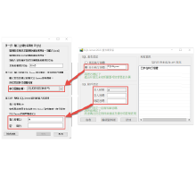
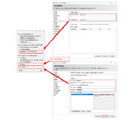
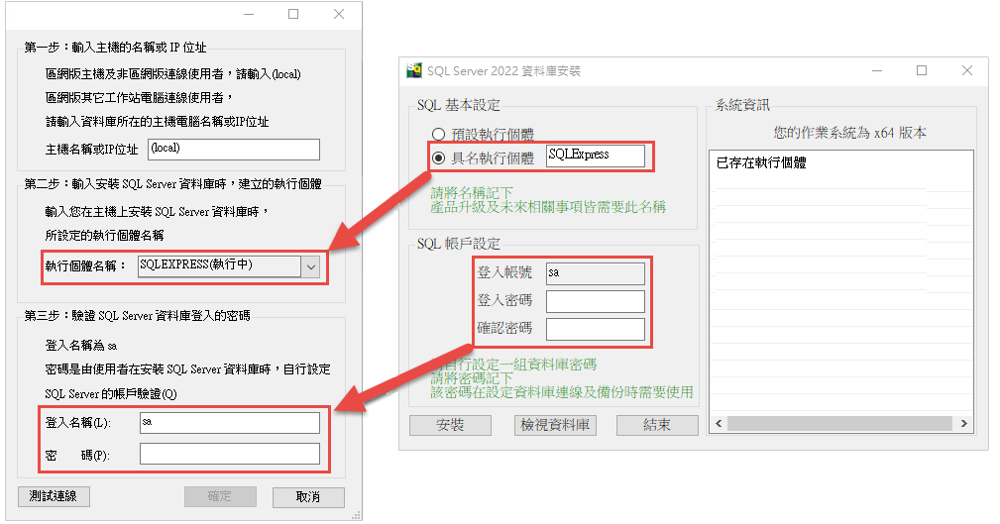
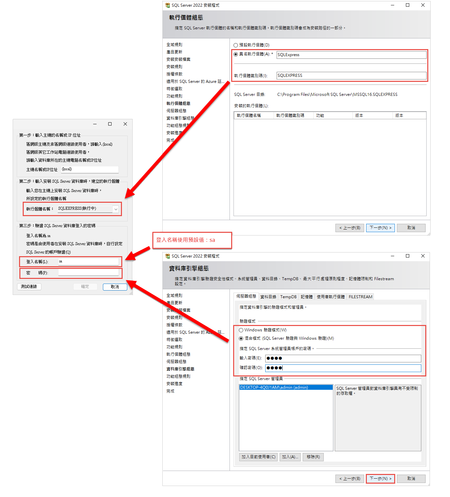
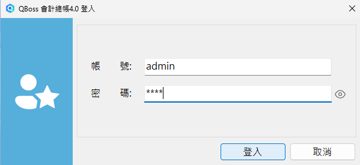

首次登入時會先進行測試連線
STEP1
一、開啟桌面捷徑後，即會進入「設定資料庫連線」畫面。
二、輸入主機的名稱或IP位址。
• 請保持原輸入『(local)』即可。
三、輸入安裝SQL Server資料庫時，建立的執行個體。
• 請下拉選單選擇『具名執行個體』，名稱的來源由安裝 Microsoft SQL Server 2022 Express 過程中，自行設定的名稱 (預設為SQLExpress)。
四、驗證SQL Server資料庫登入的密碼。
• 請使用SQL Server的帳戶驗證，並且輸入安裝資料庫引擎時，自行設定的密碼。
• 點選『測試連線』，與資料庫連線成功後，請務必點選『確定』鍵，等待表單自動關閉，即可完成資料庫建立與連線。
• 請不要在未完成時手動關閉，會造成資料庫建立不完全。
請依您資料庫引擎安裝方式，選擇以下參考畫面:

快速安裝

標準安裝


STEP2
完成主程式測試連線後即可登入 QBoss 系統主程式
『預設帳號:admin，密碼：9999』。
